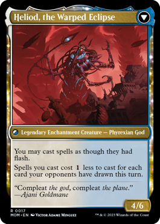
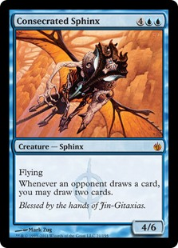
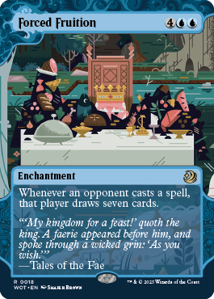
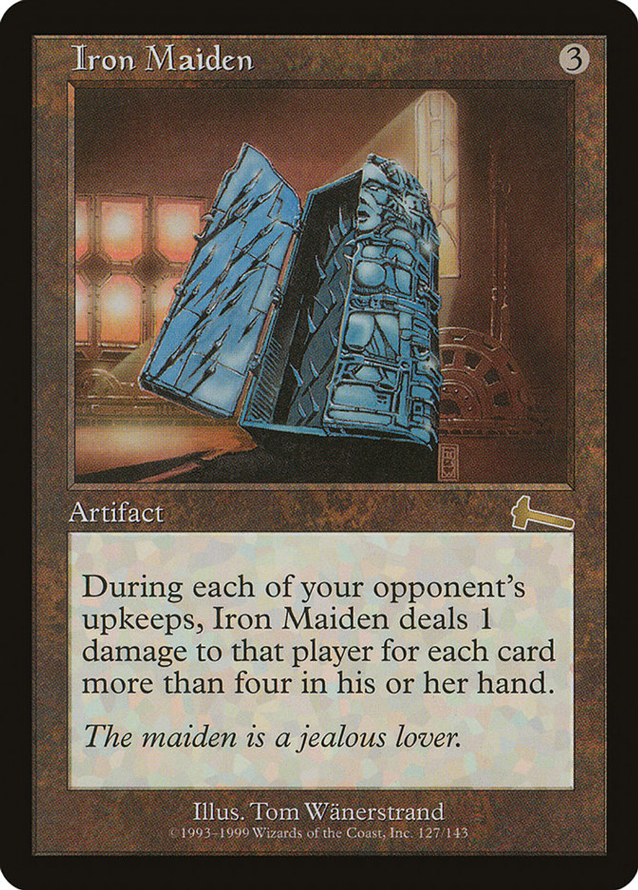
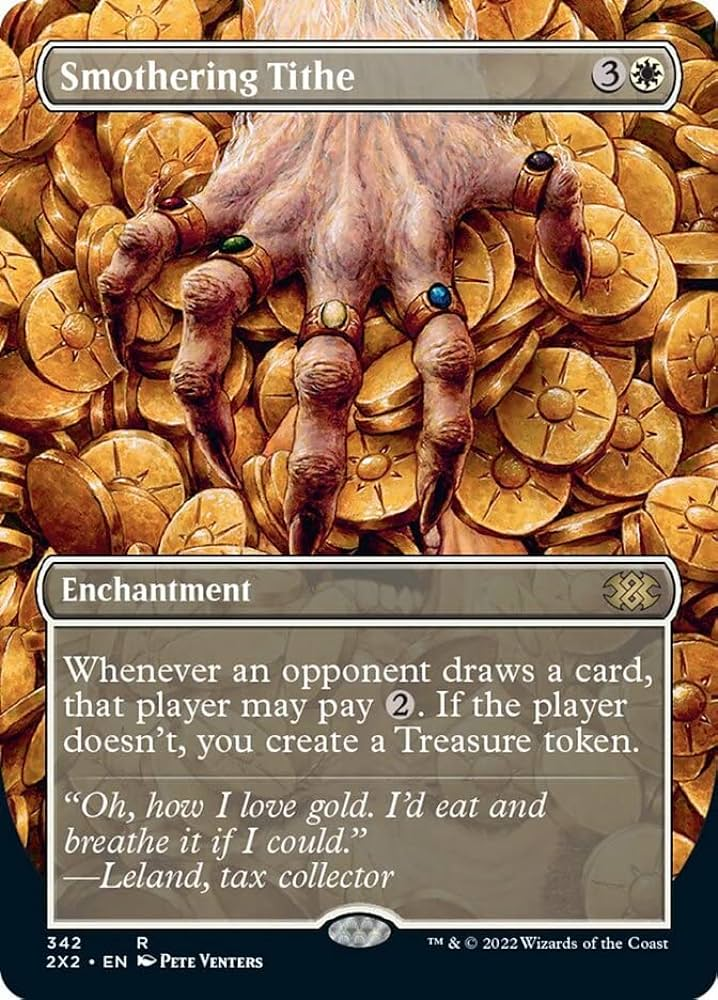
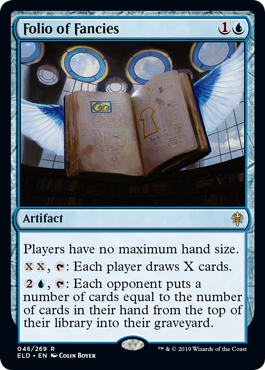

Card Draw For You, Card Draw For Me
A subtheme of the deck that cares about forcing opponents to draw cards, or opponents having cards in their hand. These are key cards to help enable your own gameplan.

The flipped version of Heliod, the Radiant dawn; take advantage of opponents drawing cards to reduce your own mana costs and cast any spell at instant speed.

This is just a pot of greed whenever an opponent draws a card.

Opponents are going to want to cast the cards they draw. Force them to draw more to eventually deck themselves out.

Make your opponents think twice about accepting an offer to draw more cards.

Do you pay the '2'?

Ensure that all players have no maximum hand size for maximum shenanigans. Use this as incidental milling for your opponents.